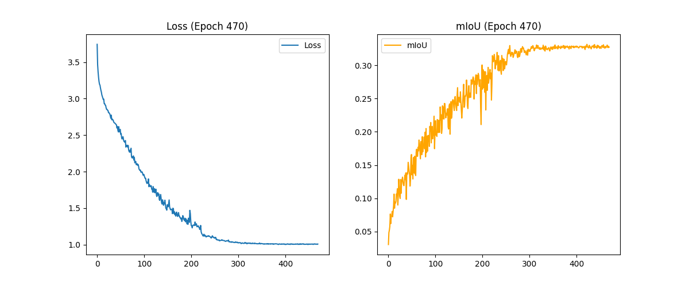
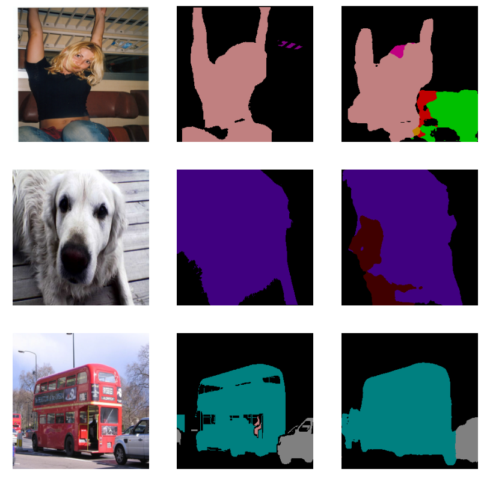

01 / Experimental results
What mattered beyond architecture?
Rather than relying on a single model, I compared a TransUNet configuration, a baseline U-Net, and cumulative changes to the U-Net training recipe.
Cross-entropy
Cross-entropy
Hybrid loss + adaptive decay
Values from Table 1 of my December 2025 ECE 364 final report. Bars share a 0–35% scale. The configurations are cumulative; the final row combines loss and scheduling changes, so their individual effects cannot be isolated.

02 / Qualitative results
From image to pixel-level labels.

The model captures recognizable object silhouettes, but the examples also reveal incorrect class assignments, rough boundaries and missing fine structure. These limitations matter even when the aggregate score improves.
03 / Implementation
Engineering the training pipeline.
Preserving discrete masks
I implemented a custom dataset loader to read indexed segmentation masks, preserve the ignore label 255, and apply nearest-neighbor interpolation to labels while resizing images with bilinear interpolation. Random crops and flips were synchronized between image and target; color jitter affected only images.
Hybrid objective and adaptive scheduling
I down-weighted background pixels (0.1 versus 1.0 for object classes) in cross-entropy and added a Dice overlap loss. The training strategy used Adam with an initial learning rate of 0.0003 and a ReduceLROnPlateau scheduler that halved the learning rate after 20 epochs without validation mIoU improvement.
04 / Reflection
What the comparison establishes.
In this course project, the full training recipe improved the validation score from 0.1081 to 0.3315. This motivated my interest in designing objectives and assessing predictions, rather than treating neural architecture as the only lever for improvement.
The result is specific to my reported configurations and split: it is not a state-of-the-art benchmark, a held-out test result, or a controlled estimate of the contribution of every change. The archived materials include the report and figures but not the model checkpoints or complete training code, so the reported runs have not been independently reproduced here.
Source: ECE 364 Final Project: Semantic Segmentation on PASCAL VOC 2012, Arnold Tao (individual project), December 21, 2025. Related but separate: ongoing undergraduate research in computational MRI.